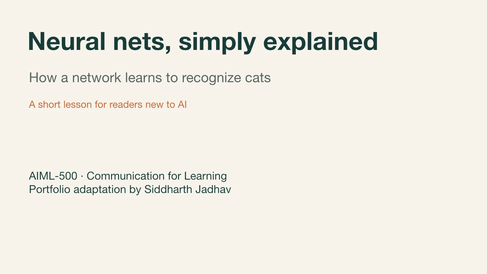
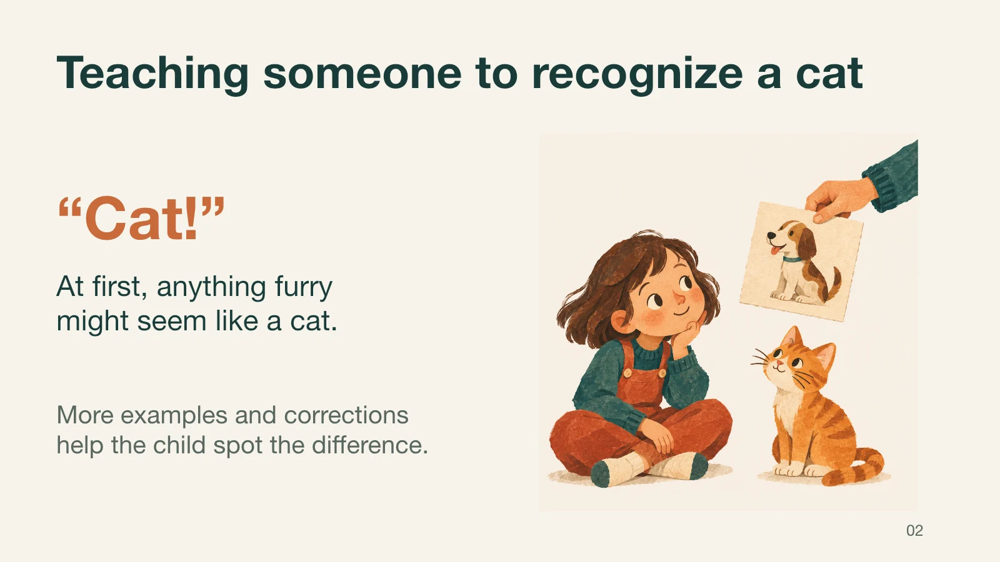
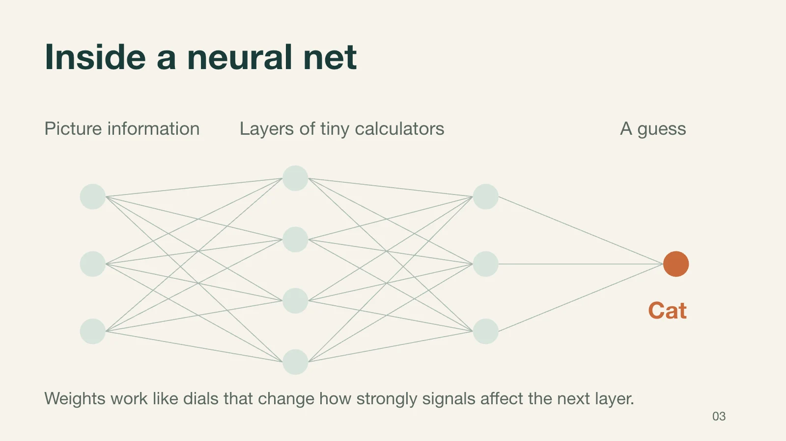
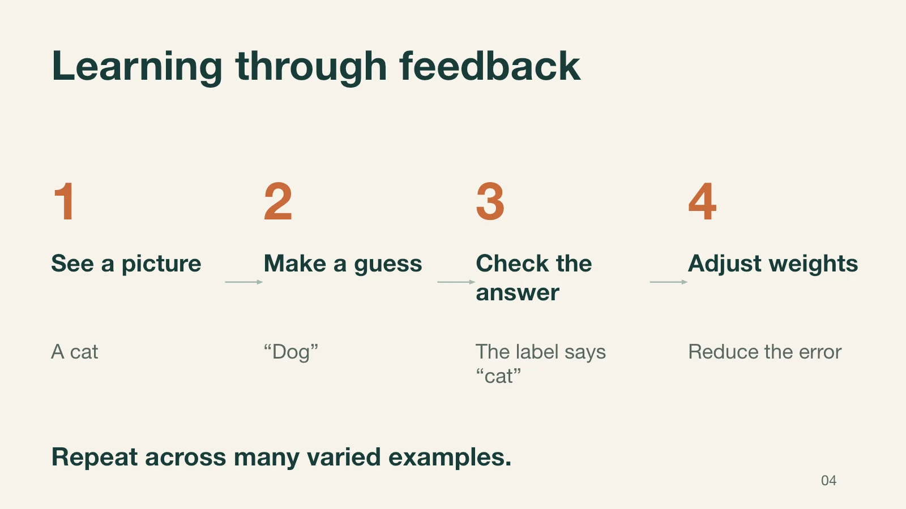
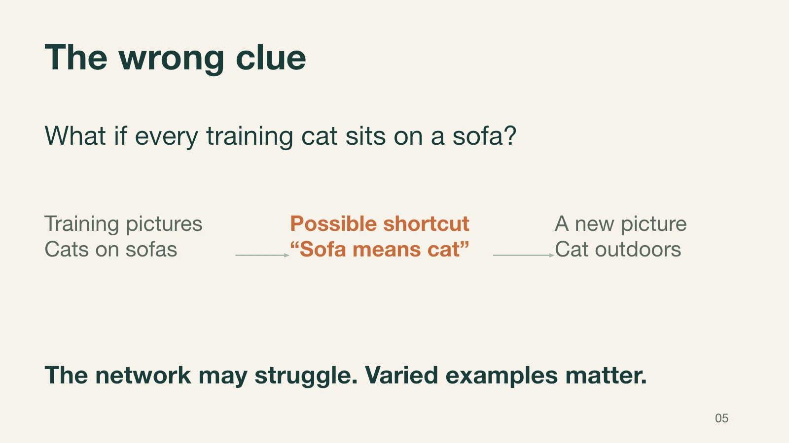
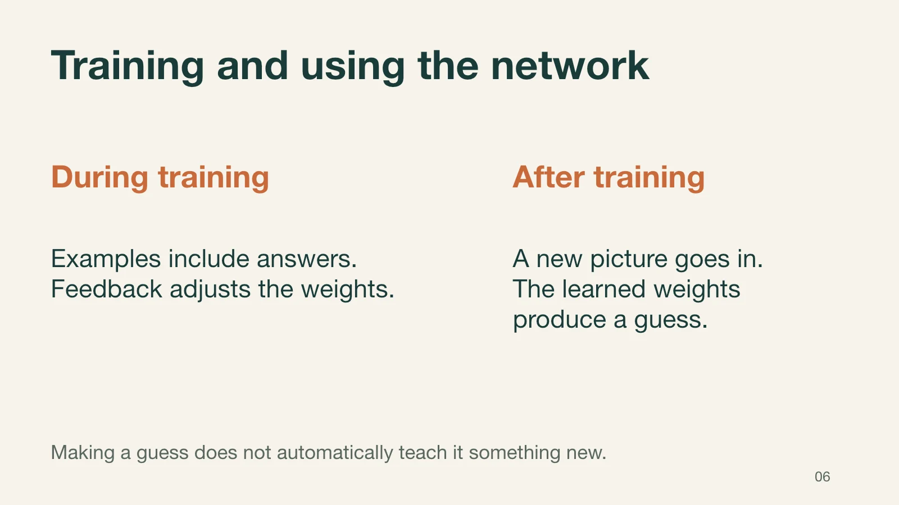
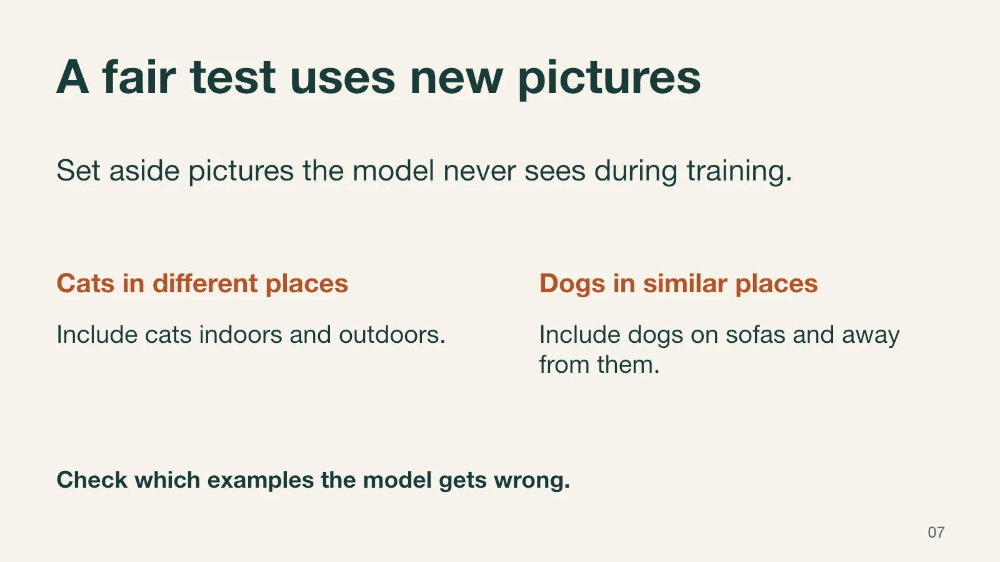
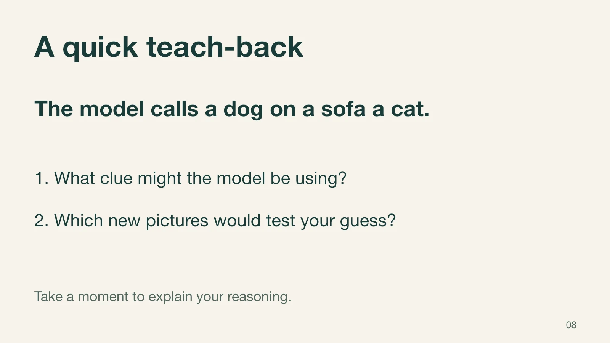
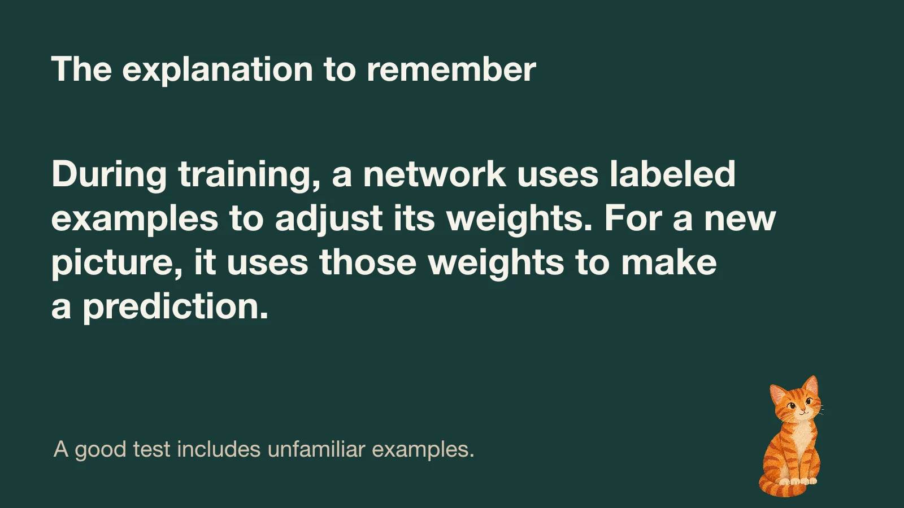
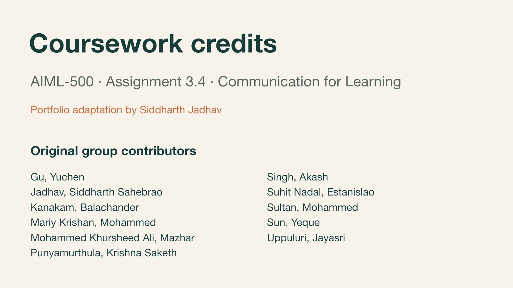

ARTIFACT 03 / ASSIGNMENT 3.4 / AIML-500
Neural Networks
Simply Explained
A short lesson for readers new to AI, using cat recognition to explain how a neural network learns and makes predictions.
Tangible Deliverable
View the ten-slide lesson here or download the PowerPoint for the full presenter notes.








Show the sample answer
The model might be using the sofa as a clue for “cat.” Try new pictures of cats and dogs both on and off sofas, then compare the mistakes across those groups.


Introduction
For AIML-500 Assignment 3.4, my group created a short presentation that explains neural networks to a beginner. I adapted our cat-recognition lesson for a team lead introducing the topic to colleagues who have little or no machine learning background.
Description
The standalone PowerPoint lesson uses one image classification example to explain how labeled pictures help a network learn, how it predicts on new pictures, and how a background detail can mislead it. It includes presenter notes, a short exercise the audience can answer in their own words, and the original group credits.
Objective
Help a beginner explain the difference between training and prediction in their own words and describe why a fair check uses examples the model has never seen.
Process
- Kept the original cat-recognition analogy and diagram so readers could follow one example across the lesson.
- Clarified what weights do and how training and prediction use them. Added a slide about testing on unfamiliar pictures to follow up on the original sofa example.
- Added a teach-back question and a sample answer in the presenter notes so a facilitator can check how the audience reasons through the example.
Tools and Technologies Used
The lesson is an editable PowerPoint presentation with speaker notes. The original deck supplied the neural-network schematic and two AI-generated illustrations. AI-assisted editing helped adapt the slides and notes, and the references below support the technical explanations.
Value Proposition
Unique Value
The lesson uses the same example to explain how a model learns and why it can learn the wrong clue. The teach-back asks a beginner to suggest a test, making it possible to check whether they understood the idea.
Relevance
A team lead can use the deck in a short onboarding or lunch-and-learn session. The activity demonstrates a skill I use in AI platform work: helping colleagues understand what a model is doing and ask informed questions about how it was tested.
References
- Neural nets, simply explained [Original group presentation, AIML-500 Assignment 3.4, 2026]. Indiana Wesleyan University. The full contributor list appears in the deck.
- Google Machine Learning Crash Course. Nodes and hidden layers, training using backpropagation, and dividing the original dataset.
- Google. Machine Learning Glossary. Entries on supervised learning, training, and inference.
- Geirhos et al. (2020). Shortcut learning in deep neural networks.